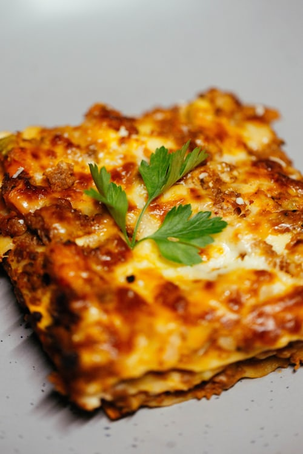

Lasanga

In this classic lasagna recipe, sheets of pasta are layered with a cheesy
filling, a rich meaty tomato sauce, and more cheese and then baked until
bubbly and browned
Ingredients
- ricotta and parmesan with seasonings
- Italian sausage
- pasta sauce
- Spinach
Steps
- In a large pot of salted water boil lasagna noodles
-
Cook sausage with onion and garlic. Drain well, add the pasta sauce &
simmer it for a few minutes to thicken.
- Stir the cheese mixture together in a bowl.
-
Layer the meat sauce and cheese mixture with lasagna noodles and bake
until the top of the lasagna is golden brown.
Home